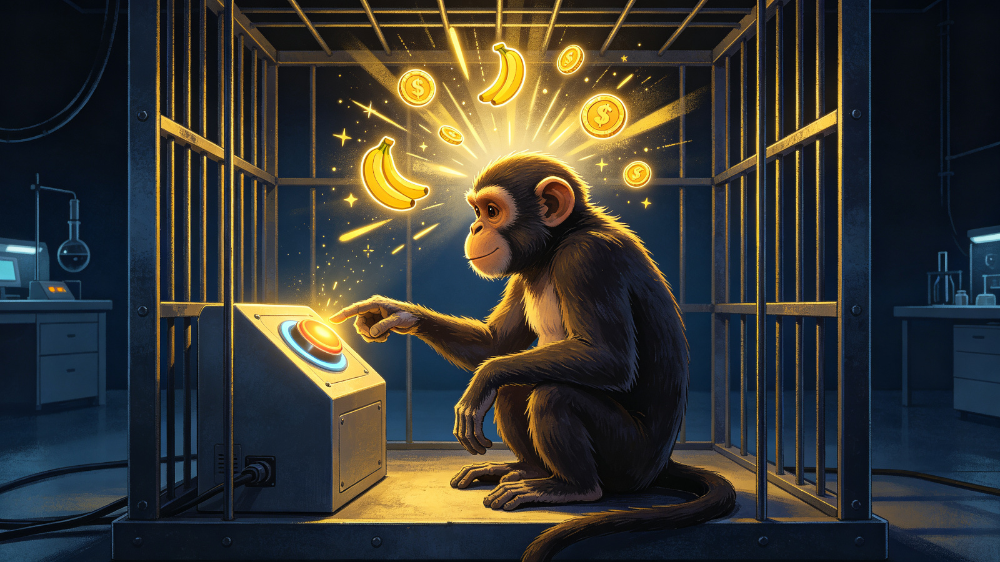
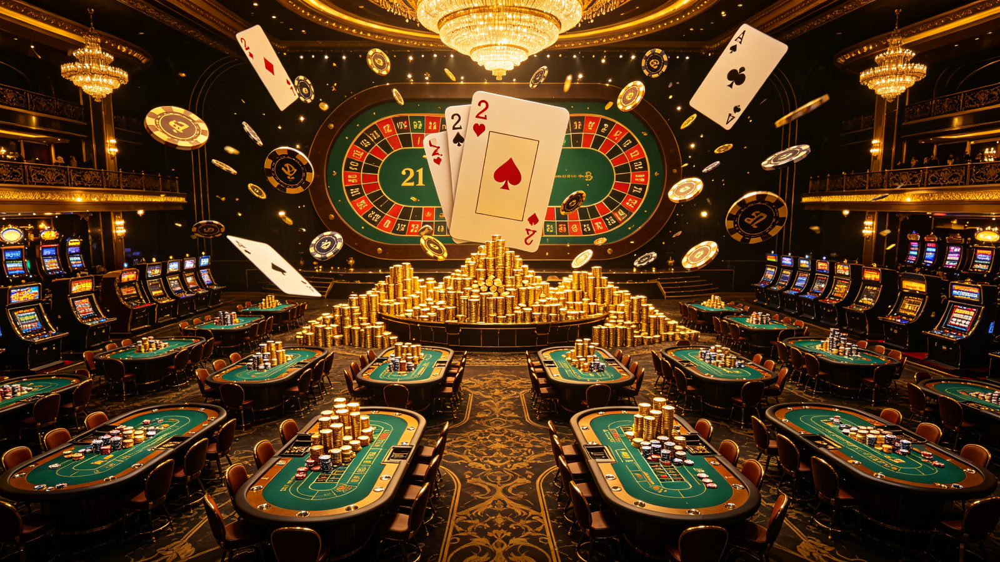

开场 · 交易者的自白
免费试读先看一个故事——它可能也是你的故事。
我看了三年盘，学遍了所有指标：K线、均线、MACD、波浪理论……
我精准地预测过无数次行情——然后眼睁睁看着它起飞，自己却没进场。
我止损过、扛单过、追涨杀跌过，账户像坐过山车，赚到的钱总是还回去。
直到有人告诉我：你缺的不是技术，是心态。 95% 的交易错误，起源于态度。
为什么聪明人也会在交易里亏光？
这本书开篇就回答了一个扎心的问题：交易圈中大部分失败者，恰恰是社会中最聪明、最有成就的人——医生、律师、工程师、科学家、CEO。智力不是决定性因素。
- 高明的分析师 = 糟糕的交易者？市场分析可以预测方向，却无法解决缺乏信心和纪律造成的执行问题。
- 交易充满“矛盾”生活中行得通的道理，在交易中可能正好相反，比如“我从事有风险的活动，所以我接受了风险”。
- 四大交易恐惧恐惧错误、恐惧亏损、恐惧错过机会、恐惧赚不到钱——95% 的错误由此而生。
心理落差：看得见，却抓不住
免费试读你看出无数赚钱机会，却和实际获利之间有惊人的落差——道格拉斯把它叫做“心理落差”。
想一想，你有多少次看着价格图表对自己说：“嗯，看起来市场会上涨。”然后市场确实上涨了，你却没有进场。预测市场走势、想到你应该赚到的所有财富，和实际交易之间，有着重大的差距。
交易分析的三次转向
你以为“多了解市场就能避免亏损”，于是搜集越来越多的变量——结果是“你学到的东西永远不够多，不足以预测市场可能害你犯错的所有方式”。道格拉斯称之为“分析的黑洞”，走到底只会更挫折。
互动：测测你的“心理落差”
回忆一下最近的交易或投资，拖动滑块选择最接近你的状态。
交易的诱惑与风险
VIP · 试读免费 · 完整解锁后畅读交易给你无限自由，也给你无限伤害的可能——这是全书最烧脑的一章。
交易真正吸引人的地方，是表达创意的无限自由：所有规则几乎都由你自己制定。有人计算过，如果你结合债券期货、债券选择权和现货债券市场，可能的价差组合超过 80 亿种。
但市场没有开始、中间或结束，像河流一样不断流动、不会等待。赌博有正式的结束，会强迫你变成主动的输家；交易没有——你不结束，亏损就继续。
随机报酬：让人上瘾的陷阱
科学家研究猴子：如果每次做对都给奖励，猴子很快学会；停止奖励后，它就不再做了。但如果奖励是随机出现的——猴子永远不知道下次有没有奖励，就会一直按下去，有些猴子会持续一辈子。
交易中偶尔的暴利，就是那个“随机奖励”。它让你沉迷于“再来一次”，而不是建立系统。

四个“问题”，个个致命
- 不愿意制定规则你一生都在摆脱规则，现在却要自己制定规则——这需要克服本能。
- 不能负责随机交易 = 没有结构且不必负责的自由。赚钱归自己，亏钱怪市场。
- 沉迷于随机的报酬随机奖励让人上瘾，让你陷入“别无选择”的状态。
- 外在控制与内在控制社会上你可以操纵环境，市场不行——你只能学习控制自己。
负责：市场只是镜子
VIP · 完整解锁后畅读负责，不是“我犯的错我认”——而是不再期望市场白白送你什么东西。
你与市场是“零和游戏”
市场唯一的目的是拿走你的钱或机会。如果你把亏损归咎于市场、觉得“被市场背叛”，就说明你还没有接受这个现实：市场对你毫无亏欠。
- 把责任投射给市场你会和市场形成敌对关系，脱离持续流动的机会。
- 用分析代替负责你会误以为“多学市场知识”能解决问题，掉进分析的黑洞。
三种交易者：你的资产曲线是哪一种？
持续一贯是一种心态
VIP · 完整解锁后畅读持续一贯不是靠努力得到的东西——努力本身会否定你的意愿，让你脱离机会流程。
最高明的交易都是不费工夫的轻松交易。你正确看出需要看出的东西，根据看到的东西采取行动，与当时的时机合而为一。交易者能够创造持续获利，其实是持续并自然地表现本性——他们本身就具有持续性。
真正了解风险
接受风险，表示你接受交易的后果，在情感上却不会不安，也不会恐惧。这是全书最重要的概念之一。
- 冒险 ≠ 接受风险“我从事有风险的活动，所以我接受了风险”是最大的误解。
- 最高的交易者不害怕他们不会因为交易的固有风险而丧失纪律、专注或信心。
- 消除痛苦的定义当信息不再让你痛苦，你就不需要规避——这就是“客观的观点”。
市场的 5 大基本事实
VIP · 全书核心这是全书的“心法总纲”。点击卡片翻面，看每一条事实背后的解释。
任何时刻总有未知力量（其他交易者）在影响价格。世界上任何地方的一个人，都可能抵消你的优势——只需要一位交易者。
优势的盈亏随机分布，你不需要预测每一次结果，只需要优势在样本中发挥。
定义优势的任何一组变量，产生的盈亏都是随机分布的。你不知道哪笔赚、哪笔亏。
优势只不过显示一件事发生的概率高于另一件事。不是保证，只是倾向。
市场中的每一刻都具有独一无二的性质。当下与过去脱钩——不要拿“上一次”套“这一次”。
概率思考：像赌场一样交易
VIP · 全书高潮赌场靠 4.5% 的微弱优势，年复一年稳定赚钱。为什么？因为样本够大，随机事件也能产生持续一贯的结果。
赌场的秘密：4.5% 优势
玩 21 点时，赌场大约比赌客多占 4.5% 的优势。这意味着样本够大时，赌场从每 1 美元赌注中净赚 4.5 美分。
如果一年下注总额 1 亿美元，赌场净赚 450 万美元——赌场老板根本不关心你这一把是赢是输，他只关心：只要玩得够多，优势必然兑现。

概率思考的两个层次
根据概率思考，需要同时相信两个看似冲突的层次：
- 个体层次每一手牌/每一笔交易的结果都不确定、无法预测。
- 总体层次一连串很多次的结果相当确定并可预测——确定性来自持续的优势。
信念的力量
VIP · 完整解锁后畅读信念是“已经变成事实的能量”，它控制你和市场互动的每一个层面——从认知、决定、行动，到你对结果的感觉。
信念如何塑造认知
一般交易者不了解自己需要哪种信念机制。最有效的信念是“任何事情都可能发生”——它除了正确无误，还会成为建立其他赢家信念的坚强基础。
- 信念起源来自成长经验、社会教化与自我认同——很多错误信念在童年就埋下了。
- 信念与事实你相信“自己知道”，就会自动期望自己正确——这是幻想与错误的源头。
态度调查：30 题心理测评
VIP · 原书附录完整量表这是原书附带的 30 题态度调查表。建议先凭第一直觉答一遍，读完全书后再答一遍，对比变化。
每题选择“同意”或“不同意”。选“同意”的题目越多，说明你越接近“用确定性思维交易”的危险区——书里的输家思维倾向。
像交易者一样思考 · 结语
VIP · 完本把前面的心法变成每天的练习。这一章，道格拉斯把赌场优势练习拆成了七个步骤。